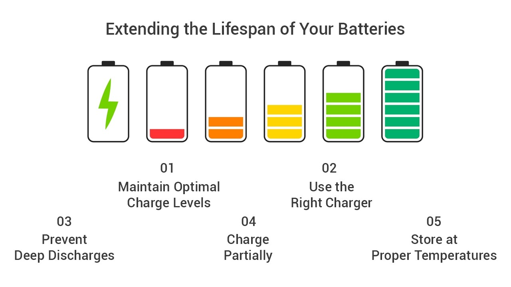
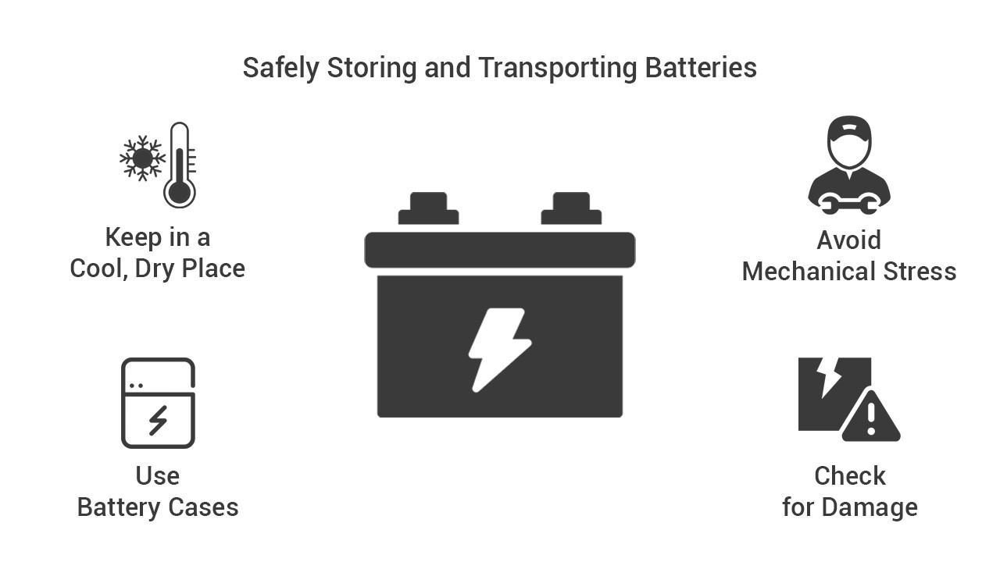
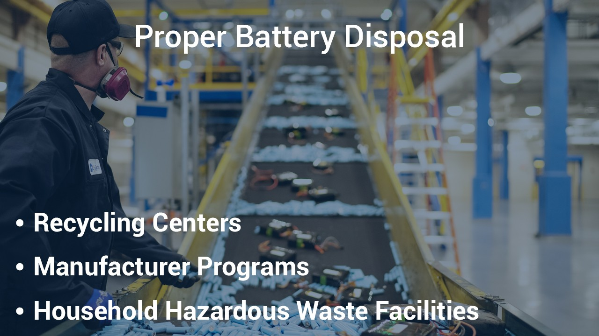
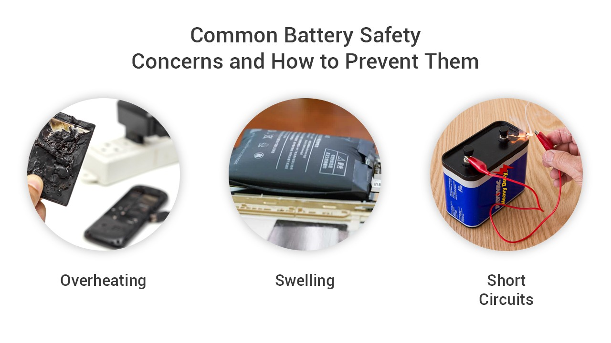
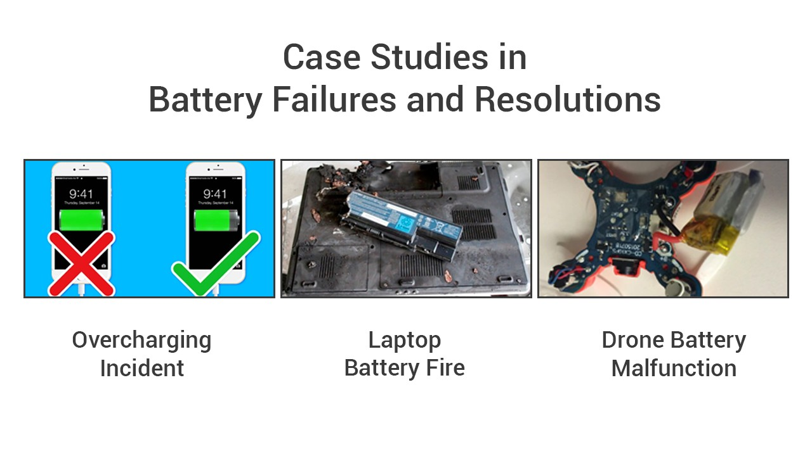

We understand that the safe and efficient use of batteries is paramount in our modern, tech-driven world. In this edition, we'll provide you with best practices for maintaining batteries, tips on extending their lifespan, safe storage and transport, proper disposal methods, and insights into common battery safety concerns. We'll also delve into real-life case studies of battery failures and how they were successfully resolved.
Extending the Lifespan of Your Batteries
Maximizing the lifespan of your batteries is both economically and environmentally responsible. Here are some tips to ensure your batteries serve you longer:

Maintain Optimal Charge Levels: Avoid overcharging or discharging your batteries completely. Keep them within the manufacturer's recommended charge range to prevent damage.
Use the Right Charger: Utilize chargers specifically designed for your battery type. Avoid third-party chargers that may lack safety features.
Store at Proper Temperatures: High temperatures can damage batteries. Store them in a cool, dry place to extend their life.
Charge Partially: Lithium-ion batteries fare better when charged in partial cycles, so there's no need to wait for a complete discharge before recharging.
Prevent Deep Discharges: Try to recharge your batteries when they reach around 20% to 30% capacity to maintain their longevity.
Safely Storing and Transporting Batteries
Safe storage and transport of batteries are essential to avoid potential hazards:

Keep in a Cool, Dry Place: Extreme temperatures can be harmful. Store your batteries in a place with a stable and moderate temperature.
Avoid Mechanical Stress: Ensure batteries are stored or transported in a way that avoids pressure or physical stress.
Use Battery Cases: When carrying spare batteries, use dedicated battery cases or covers to prevent short circuits.
Check for Damage: Inspect your batteries for any signs of physical damage before using or storing them.
Proper Battery Disposal
Responsible disposal is crucial for the environment and safety:

Recycling Centers: Check with local recycling centers for battery disposal options. Many have drop-off points for batteries.
Manufacturer Programs: Some manufacturers have recycling programs where you can return old batteries for safe disposal.
Household Hazardous Waste Facilities: These facilities often accept batteries for safe disposal.
Common Battery Safety Concerns and How to Prevent Them
Understanding and preventing battery safety issues is crucial:

Overheating: To prevent batteries from overheating, avoid charging them at high temperatures and ensure proper ventilation during charging.
Swelling: Swelling is often a sign of an internal issue with the battery. If you notice any swelling, discontinue use immediately and dispose of the battery properly.
Short Circuits: Use battery cases and avoid carrying loose batteries in pockets or bags, as contact with metal objects can lead to short circuits.
Case Studies in Battery Failures and Resolutions
Let's take a look at real-life examples:

Overcharging Incident: A smartphone battery swelled due to overcharging. By discontinuing use, the device was saved from potential damage. The user then switched to a manufacturer-recommended charger and followed proper charging guidelines.
Laptop Battery Fire: An old and damaged laptop battery overheated and ignited. The user extinguished the fire using a fire extinguisher. This incident prompted proper battery disposal and safer practices.
Drone Battery Malfunction: A drone battery failed in flight, causing the drone to crash. After inspection, it was revealed that overcharging and insufficient cooling were responsible for the malfunction. The user adopted improved charging practices and implemented better cooling during flights.
By sharing these case studies, we hope to underline the importance of safety and maintenance, not only for the longevity of your batteries but also for your well-being and those around you.
Knowledge is power, and it's our goal to empower you with the knowledge you need to use batteries safely and efficiently. With these best practices and insights, you're equipped to make informed decisions when it comes to battery usage.
Thank you for being part of our community, and stay tuned for more valuable insights in our future newsletters!